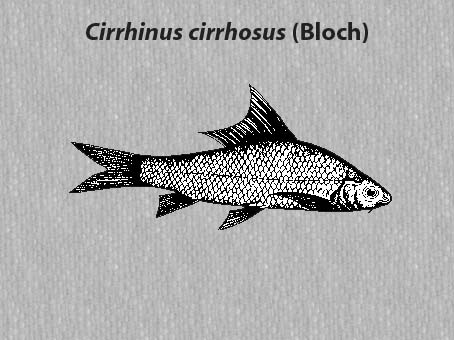

|
DIGITISED INVENTORY OF FRESHWATER FINFISHES AND SHELL FISHES OF INDIA |
Cirrhinus cirrhosus
Taxonomic
Details
----- Valid Name
----- Classification
----- Synonyms
----- Common Names
Other
Biological Details
----- Habit and
Habitat
----- Morphological
Features
----- Reproductive
Biology
---------- Breeding
season
---------- Breeding techinique
---------- Fishing methods
----- Biology
Stages of development:
Economic
Importance
----- Uses
----- Parts Used
Economic potenial to the country
----- ----- Fishery statistics
Miscellaneous Information
Literature
Name : Cirrhinus cirrhosus (Bloch),1795 
Family : Cyprinidae
Classification:
Phylum: Chordata Subphylum: Vertebrata
Class: Actinopterygii Subclass:Neopterygii
Division: Teleostei Subdivision: Euteleostei
SuperOrder: Ostariophysi Order:Cypriniformes
SubOrder: N.A. Family:Cyprinidae
Subfamily:Cyprininae
Synonyms:Cirrhina cirrhosa (Bloch),1795
Cirrhina cirrhosa Day,1877
Cirrhina leschenaultii
(Valenciennes),1842Cirrhina macrops Steindachner, 1870
Cirrhina mrigala (Hamilton),1822
Cirrhina plumbea Valenciennes,1842
Cirrhina rubripinnis Valenciennes,1842
Cirrhinus blochii Valenciennes,1842
Cirrhinus chaudhryi Srivastava,1968
Cirrhinus cirrhosus (Bloch),1795
Cirrhinus horai Lakshmana,1966
Cirrhinus mrigala (Hamilton),1822
Cyprinus cirrhosus Bloch,1795
Cyprinus mrigala Hamilton,1822
Dangila leschenaultii Valenciennes,1842
Mrigala buchanani Bleeker,1860
HABIT & HABITAT: Warm Water
Distribution : Cauvery, Godavary, Krishna river system, Narmada & Pench
river in Madhya Pradesh.
MORPHOLOGICAL FEATURES: Body elongate, its depth more than length of head. Snout not projecting beyond mouth, generally With some fine pores. Mouth broad; lower lip fairly thick, upper lip entire. Barbels two well-developed pairs; rostral pair longer than maxillary barbels. Pharyngeal teeth in three rows, 5.4.3/3.4.5. Dorsal fin as high as body, anterior few rays often very elongated. Caudal fin deeply forked. Lateral line with 42 to 46 scales; lateral transverse scale-rows 4½ -5½ /4}.
REPRODUCTIVE BIOLOGY:In sexual dimorphism, male and female of C. cirrhosa are identifiable in maturing and mature specimens on development of secondary sexual characters. Like other carps, male exhibits roughness on the pectoral fin, which later remains smooth in female. Pectoral fin is relatively longer reaching to 10th lateral line scale in male. In female, it reaches to 9th L..scale. Genital aperture is slit-like with introvert vent in male; while female possesses bulging abdomen with swollen extrovert pinkish vent. Ripe male oozes milt on a slight pressure on the abdomen. Bulk of ova run out from the ovary in prime condition of the female if a slight pressure exerts on the body near the genital apperture.
Breeding season:The anual
breeder C. cirrhosa lays ova in the swift riverine sections of the south
Indian rivers during July-September ( Madras Fish. Dept. Report, 1954-55) or
May-October with the commencement of south west monsoon (Chacko and Kuriyan,
1949a). The breeders undertake spawning migration from the Mettur reservoir. The
pools below the Hogainakkal falls and Kulithalai are the two recorded spawning
grounds. The percentage composition of C. Cirrhosaspawn catch from
Hogainakkal and Kulithalai were 12.1 and 0.8 respectively (David etal.,
1967). Themonsoon flood with associated characters, specially the swift current
and the optimum temperature (20-27°C) are the possible factors for natural
breeding.
Breeding techinique:N.A.
Fishing methods:N.A.
BIOLOGY:A South Indian freshwater major carp with very active
habit, C. cirrhosus is indigenous to a few specified water bodies. It is
fair eating but bony. It is very hard in nature. Young ones stand transport well
both in open and closed oxygenated carriers. The trematoda infection with
Diplozoon cauveryi on the gills of white carp (Tripathi, 1959) has been
reported to be common.
Stages of
development:
The various stages of the developing embryo, and the larval and
postlarval forms are passed in the rivers, and thus could hardly be collected.
The period of incubation of the hypophysed fertilised eggs has, however, been
recorded to be 13 to 19 hours at water temperature 250 C or below (Thangaraj
and Dinakaran, 1981). Details of the life history of the white carp are still
unknown.
Uses: It is
a hardy fish growing to 25-30 cm and 330 gm in one year, and 61 cm and 1 to 2 kg
in two years. Economic
potential to the country This carp is a very active fish which thrives in
ponds but breeds in swift rivers. It is a hardy fish growing to 25-30 cm and 330
gm in one year, and 61 cm and 1 to 2 kg in two years. It is essentially a
planktonic feeder, but also browses on algae in marginal shallows. It is the
major carp of the Cauvery river. It thrives excellently in tanks and is quite a
game fish. Talwar and Jhingran Inland
Fisheries vol. 1 Pg.170
Parts Used: